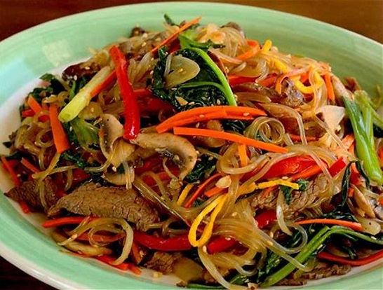

Japchae

Japchae is a noodle dish mixed with an array of vegetables. It is usaually served on special occasions (known as a party dish) as a side dish/meal rather than the main meal.
That being said japchae can be eating as a full meal as it includes starch, vegetables, and protein.
I am sharing the vegetarian version, so there is no meat included in this recipe.
Ingredients
- 4 ounces of dangmyeon (sweet potato starch noodles)
- 4 ounces spinach, washed & drained
- 1 medium carrot, julienne
- 2 green onions, chopped
- 1 medium onion, julienne
1/2 red bell pepper, julienne
- 2 garlic cloves, minced
- 1 tbsp sugar
- 1 tbsp tsp soy sauce
- 1 tbsp toasted sesame oil
- 1/2 tsp ground black pepper
- salt
- vegetable oil (of choice)
Directions
- Bring a pot of water to a boil. Add spinach and blanch for 30 seconds.
- Strain and rinse the spinach in cool water. Squeeze excess water, cut, and place into a bowl.
- Add noodles in a pot of boiling water. Cover and cook for approximately 8 minutes, until noodles are soft and chewy.
- Heat skillet over medium high heat. Add 2 tsp vegetable oil with the onion, green onion, and a pinch of salt.
- Stir-fry for about 2 minutes, until the onion looks a little translucent. Transfer noodles to a bowl.
- Heat skillet over medium high heat. Add 2 tsp vegetable oil, add carrots and stir-fry for 20 seconds. Add red bell pepper, stir-fry for an additonal 30 seconds.
- Transfer it to the noodle bowl.
- Add minced garlic, soy sauce, sugar, black pepper, and toasted sesame oil to the noodle bowl. Mix all ingredients well.
- Sprinkle toasted sesame seeds. Serve!